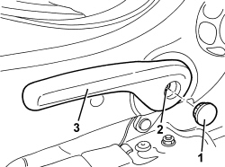

7045A56 DRIVER'S SEAT HEIGHT ADJUSTMENT DEVICE CONTROL LEVER - R.R
- Path
- Procedures > 70 FITTINGS > 7045 FRONT SEATS > 7045A FRONT SEAT ASSEMBLY > 7045A56 DRIVER'S SEAT HEIGHT ADJUSTMENT DEVICE CONTROL LEVER - R.R
- Kind
- repair procedure (removal / refitting; the operation number is the code)
- Applies to
- all engines; all production periods
- Interactive page
- https://sloeber94.github.io/elrnDB/#/939011295
Applies to: all engines; all production periods
 Removing
Removing
 Refitting
Refitting- Raise the seat until it is in the end of travel position.
1. Remove the cover.
2. Undo the lever retaining bolt
3. Remove the lever.

Applies to: all engines; all production periods
Refitting
Removing- Fit the lever.
- Tighten the bolt.
Component | Fastening | dia | Value (daNm) | Validity |
|---|---|---|---|---|
SEAT HEIGHT ADJUSTMENT LEVER | Bolt | - | 2.2 ÷ 2.8 |
- Fit the cover.
- Test the operation of the seat height adjustment.
Topics that link to this page (13)
- O005 FRONT SEAT HEIGHT ADJUSTMENT NOT WORKING
- 7045A36 DRIVER'S SEAT MANUAL HEIGHT ADJUSTMENT DEVICE - R.R
- 7045A43 FRONT SEAT EXTERIOR GUARD (ONE), LEFT OR RIGHT - R.R
- 7045A59 FRONT SEAT BACK INCLINATION ADJUSTING DEVICE (ONE), LH OR RH - R R
- 7045A86 FRONT SEAT FRAME (ONE), LEFT OR RIGHT, R.R.
- 7045D10 TRIM FOR ONE FRONT SEAT LH OR RH - R.R
- 7045D11 TRIM OF ONE FRONT SEAT LH OR RH RR WITH SEAT REMOVED
- 7045D18 FRONT SEAT CUSHION SPRINGING (ONE), LH OR RH - R R
- 7045D20 FRONT SEAT CUSHION COVER, LEFT OR RIGHT - R.R.
- 7045D21 FRONT SEAT CUSHION COVER, LEFT OR RIGHT - R.R. WITH SEAT REMOVED
- 7045M10 FRONT SEAT HEATING SYSTEM SWITCH, LEFT OR RIGHT - R+R
- 7045M22 HEATER PAD FOR FRONT SEAT CUSHION, LEFT OR RIGHT - R.R. FOLLOWING ELECTRICAL CIRCUIT CHECK
- 7065A34 PASSENGER PRESENCE SENSOR ON FRONT SEAT FOR INDICATING SEATBELT UNFASTENED R R